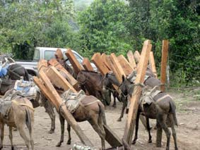

Los puntos candentes
La zona de Intag-Manduriacos tiene una extensión de unas 150 mil hectáreas. De esta área, 70 mil hectáreas son de bosque de alta calidad. Dichos bosques funcionan como una zona de amortiguamiento para la Reserva Ecológica Cotacachi Cayapas (RECC).
El área descrita incluye partes de dos de los 25 puntos candentes (en inglés, hotspots) en el planeta: los Andes Tropicales y el Chocó-Tumbes. Los hotspots son zonas con una diversidad biológica fuera de lo común, con un número altísimo de especies no encontradas en ninguna otra parte del mundo (las denominadas ‘endémicas’) y que han perdido el 70 por ciento o más de su cobertura forestal. Su conservación es de prioridad global. La espectacular biodiversidad de los bosques de Íntag-Manduriacos se reflejan en investigaciones recientes, llevadas a cabo en la reserva Los Cedros. Según estos estudios, existen 299 especies de árboles por hectárea, cifra que ubica los bosques entre los más ricos del mundo.
Pero en Cotacachi, los índices de deforestación están entre los más altos del país y de Sudamérica. Entre 2001 y 2006, la pérdida de cobertura boscosa llegó al 1,92 por ciento por año. Esta cifra es inferior al 2,47 por ciento de la provincia de Imbabura, debido, en gran parte, a los esfuerzos de organizaciones de base para conservar sus bosques. Y el índice de deforestación dentro de la Reserva Ecológica Cotacachi Cayapas y los bosques protectores El Chontal y Los Cedros, es, como promedio, 0,13 por ciento anual. No obstante, la deforestación de los bosques de la zona sigue siendo el doble del índice considerado peligroso –esto es, el 0,94 por ciento– para los bosques andinos, que están entre los más vulnerables del mundo.
Historia de la zona
La colonización de Íntag-Manduriacos inició en la década de los 1880. Desde aquellos años, la zona ha perdido el 66 por ciento de su bosque original. La causa principal: la expansión de la frontera agrícola-ganadera. Las operaciones madereras se intensificaron en los 1960 y 1970 debido a la nueva Ley de Reforma Agraria y Colonización que requería la tala de bosque para demostrar posesión de un terreno. Al mismo tiempo, la expansión de las carreteras favoreció la continuada explotación de madera, la siembre de monocultivos y la expansión de la frontera agrícola y ganadera. Este último fenómeno se debe a la realidad de los suelos de la zona: existen, en gran parte, en pendientes fuertes, expuestos a lluvia cuyo índice anual llega a 4 000 milímetros en algunos sitios, situación que acelera la erosión de suelos. Estos sostienen los cultivos y los pastos por apenas tres a seis años, obligándole al agricultor/ganadero a invertir en fertilizantes y plaguicidas o a trasladar su hato y sus cultivos a tierras ‘vírgenes’ que se consiguen mediante la tala de más bosque. Tarde o temprano, muchas familias campesinas terminan abandonando sus parcelas y migrando a zonas urbanas.
Pero existen más factores que contribuyen a la degradación ambiental que conlleva a la baja productividad de la tierra y los bajos ingresos de las familias campesinas. Éstas incluyen la tenencia de la tierra poco clara, la falta de capital, asistencia técnica, acceso a mercados, oportunidades educativas y alternativas económicas a la sobreexplotación de la tierra..
Y los agricultores no son los únicos que contribuyen a la desaparición de los bosques. Existen amenazas externas, creadas por personas que no viven en la zona. Entre éstas está la tala ilegal fomentada por contrabandistas de madera quienes no hacen ningún esfuerzo para reforestar. Están, también, los traficantes de tierras cuya labor, con la de los contrabandistas, se ve facilitada por corruptos funcionarios gubernamentales. Finalmente, están los intereses nacionales e internacionales ansiosos de explotar minerales y construir grandes proyectos hidroeléctricos, dos actividades poco compatibles con la conservación de la naturaleza.
Las alternativas
Según el análisis de la situación de Íntag-Manduriacos presentado en el foro, existen formas para conservar los bosques y, simultáneamente, mejorar el bienestar de los 15 mil habitantes de la zona. Su propuesta se basa en evitar, en primer lugar, que se introduzcan megaproyectos mineros e hidroeléctricos, y también que se descarten planes para sembrar monocultivos forestales y plantaciones de agrocombustibles (caña de azúcar y palma africana, por ejemplo). Estos últimos promoverán mayor deforestación, colonización y marginalización de los campesinos, y pondrán más presión en las áreas protegidas y los bosques amortiguadores. Existe un ejemplo cercano que demuestra lo poco aconsejable de este modelo: la tala en una escala sin precedentes en Esmeraldas ha devastado los bosques de la denominada “provincia verde”.
Lo que proponen los autores de la ponencia es la participación de las comunidades en la implementación de estrategias eficaces, eficientes y equitativas en las áreas boscosas a su alrededor. Estas estrategias incluyen: acceso a crédito y capital de inversión para establecer sistemas de producción sustentables, compatibles con la conservación de los bosques; el establecimiento de linderos y la legalización de propiedades para controlar invasiones por traficantes y/o colonos; la legalización de comunidades; la creación de comités de conservación y guardabosques comunitarios para controlar la tala, la colonización, la caza y el tráfico de vida silvestre; la creación de alternativas económicas; asistencia legal a comunidades para enfrentar la corrupción de autoridades, la amenaza minera y otros problemas; la elaboración e implementación de planes de manejo forestal. Sugieren, además, el monitoreo de los bosques por parte de terceros y un manejo descentralizado, basado en el programa Socio Bosque.
¿De dónde provendrían los fondos para estas medidas?
{niftybox textcolor=green }
El porqué de las invasiones de áreas protegidas

Las reservas El Chontal y Los Cedros son invadidas con una frecuencia desconcertante. ¿Por qué? Los autores de la ponencia “Una estrategia para el desarrollo sustentable y la conservación comunitaria de los bosques de Íntag-Manduriacos en el Ecuador” son tajantes al respecto: las instituciones designadas a manejar la tenencia de tierra están plagadas por la corrupción y una excesiva burocracia. Esta situación lo hace casi imposible que un posesionario legítimo consiga el título a la propiedad que ha trabajado durante años. Por el contrario, los funcionarios corruptos trabajan en beneficio de “los traficantes profesionales que manejan una red de corrupción dentro de las oficinas gubernamentales y promocionan la ambición entre los habitantes locales, lo que genera conflictos en las comunidades”. Según los autores, existe corrupción en el Ministerio del Ambiente y el Instituto Nacional de Desarrollo Agrario, sobre todo, respecto al comercio de madera talada de manera ilegal y la legalización de títulos de propiedad de tierras.
{/niftybox}